Arquitectura de Software — 2026-I Universidad Nacional de Colombia
Nombre del Equipo: 2B
| Nombre Completo |
|---|
| Ana María González Hernández |
| Iván Daniel Silva Oyola |
| Daniel Alejandro Ortiz Velosa |
| Carlos Julián Reyes Piraligua |
| Sergio Esteban Rendón Umbarila |
| Sergio Alejandro Ruiz Hurtado |
| Cristian Javier Medina Barrios |
| Camilo Andrés Liévano Rendón |
UN Wheels
UN Wheels es una plataforma de movilidad compartida diseñada para la comunidad universitaria de la Universidad Nacional de Colombia. Conecta estudiantes conductores con estudiantes pasajeros dentro de un ecosistema cerrado y verificado mediante correo institucional (@unal.edu.co), centralizando la publicación y gestión de rutas compartidas que hoy ocurren de forma dispersa en plataformas externas como WhatsApp o grupos de Facebook.
El sistema permite a los conductores publicar rutas con horario, paradas, precio por asiento y cupos disponibles, mientras que los pasajeros pueden buscar rutas, reservar cupos y comunicarse directamente con el conductor mediante chat en tiempo real. El modelo se basa en un usuario único con roles dinámicos: cualquier estudiante actúa como pasajero por defecto, y al registrar un vehículo adquiere la capacidad de conductor. Las reservas incluyen control de concurrencia para garantizar que no se sobrevendan los cupos.
La arquitectura sigue un patrón de microservicios distribuidos con cinco lenguajes de programación de propósito general distintos (TypeScript, Python, JavaScript, Go, Dart), cinco componentes de tipo lógico, un API Gateway para el tráfico norte-sur, un broker de mensajes (RabbitMQ) para la comunicación este-oeste y la orquestación asíncrona entre servicios, y cinco componentes de tipo datos que incluyen bases de datos relacionales y NoSQL. Todo el sistema se despliega como contenedores Docker orquestados mediante Docker Compose.
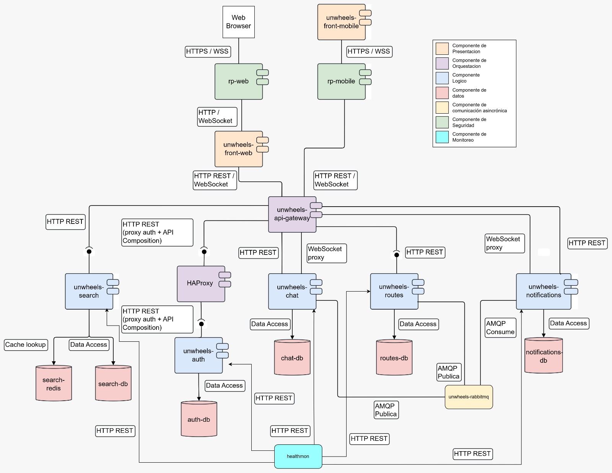
Capa Edge
Es la única zona expuesta al mundo exterior (Internet/Host). Aloja los Reverse Proxies, que fungen simultáneamente como enrutadores y firewalls perimetrales (ModSecurity + OWASP CRS embebido).
| Componente | Puerto | Descripción |
|---|---|---|
| rp-web | 8080 | Reverse proxy dedicado al cliente web. Enruta el tráfico de páginas hacia el frontend y las conexiones WebSocket directamente al API Gateway. Posee políticas de seguridad flexibles adaptadas a navegadores (ej. permite cargas de hasta 10 MB y admite contenido multipart/form-data para subida de imágenes) e implementa Rate Limiting. |
| rp-mobile | 8081 | Reverse proxy dedicado a la aplicación móvil. Enruta el tráfico exclusivamente hacia el API Gateway. Posee un perfil de seguridad sumamente estricto, diseñado para una API pura (límite de carga de 5 MB y aceptación exclusiva de peticiones en formato JSON). |
Capa Web-Zone
| Componente | Tecnología | Lenguaje | Descripción |
|---|---|---|---|
| unwheels-frontweb | NextJS | TypeScript | Aplicación encargada del renderizado del lado del servidor (SSR) y de la interfaz de usuario web. Reside en una red aislada a la que solo el rp-web tiene acceso, impidiendo la comunicación directa desde cualquier otra fuente. |
Capa Gateway-Zone
| Componente | Tecnología | Lenguaje | Descripción |
|---|---|---|---|
| unwheels-api-gateway | NodeJS | TypeScript | Orquestador principal de la API. Coordina, enruta y consolida las peticiones recibidas hacia los microservicios correspondientes. Recibe tráfico validado directamente desde rp-mobile, solicitudes internas desde el unwheels-front-web, y conexiones WebSocket enviadas por el rp-web. |
Capa Balance-Zone
| Componente | Tecnología | Lenguaje | Descripción |
|---|---|---|---|
| loggueo-lb | HAProxy | — | Load balancer de software que distribuye el tráfico de autenticación entre las tres réplicas del unwheels-auth (loggueo_1, loggueo_2, loggueo_3). Implementa el patrón Load Balancer con algoritmo Round-Robin por defecto, intercambiable por Least Connections o IP Hash mediante configuración en volumen. Realiza health checks activos HTTP (GET /) cada 5 segundos sobre cada réplica, retirando automáticamente del pool toda instancia que acumule 3 fallos consecutivos y reincorporándola tras 2 checks exitosos. Mantiene el nombre DNS loggueo-service, garantizando transparencia total hacia el api-gateway. |
Capa Services-Zone
| Componente | Tecnología | Lenguaje | Puerto | Descripción |
|---|---|---|---|---|
| unwheels-auth | FastAPI + SQLAlchemy + Pydantic v2 + Uvicorn | Python 3.x | 8000 | Autenticación, registro de usuarios (validando dominio @unal.edu.co), emisión y validación de JWT, y gestión de perfiles y vehículos. Es el único servicio que emite tokens JWT. |
| unwheels-routes | Express.js + Mongoose | JavaScript (Node.js) | 4000 | Gestión del ciclo de vida completo de rutas y reservas: creación, consulta, control de concurrencia para cupos, y transiciones de estado de reservas (PENDING → CONFIRMED / REJECTED). Publica eventos de dominio en RabbitMQ al completar operaciones de negocio. |
| unwheels-chat | NestJS + Socket.IO + Mongoose | TypeScript (Node.js) | 3001 | Mensajería bidireccional en tiempo real entre conductores y pasajeros. Expone un Gateway Socket.IO para mensajería en tiempo real y un Controller HTTP para consultar historial y listar conversaciones. Publica eventos chat.message en RabbitMQ. |
| unwheels-notifications | NestJS + Socket.IO + Mongoose | TypeScript (Node.js) | 3002 | Consumidor de eventos asíncronos de RabbitMQ. Persiste notificaciones en MongoDB y las entrega en tiempo real vía WebSocket (Socket.IO, namespace /notifications). Actúa como puente AMQP↔WebSocket dentro del mismo proceso. |
| unwheels-search | Gin + pgx/v5 | Go | 6000 | Búsqueda geoespacial de rutas disponibles. Mantiene un índice de lectura optimizada en PostgreSQL+PostGIS, sincronizado periódicamente con unwheels-routes mediante polling HTTP. Expone un único endpoint público que acepta consultas de texto libre y radio geográfico. |
| Componente | Tecnología | Lenguaje | Descripción |
|---|---|---|---|
| healthmon | Node.js | JavaScript | Monitor centralizado de salud del sistema. Implementa el patrón Health Check / Heartbeat enviando probes HTTP periódicos (cada 15 s) a los cinco microservicios de lógica de negocio y al load balancer HAProxy. Mantiene contadores de fallos consecutivos por servicio y emite eventos estructurados en JSON (UNHEALTHY / RECOVERED) a stdout cuando un servicio supera el umbral de 3 fallos consecutivos. Expone los endpoints GET /status (estado agregado de todos los servicios) y GET /healthz (liveness del propio monitor). |
Componente de Orquestación
| Componente | Tecnología | Descripción |
|---|---|---|
| unwheels-rabbitmq | RabbitMQ 3.13 (puertos 5672 AMQP / 15672 Management UI) | Broker de mensajes para comunicación asíncrona este-oeste entre microservicios. Utiliza un topic exchange durable (uniwheels.events) con routing keys para enrutamiento de eventos. Habilita el patrón Publish-Subscribe con desacoplamiento total entre productores y consumidores. |
Capa Data-Zone
| Componente | Tipo | Usado por | Descripción |
|---|---|---|---|
| auth-db | PostgreSQL 16 (Relacional) | unwheels-auth | Almacena usuarios y vehículos con integridad referencial. Transacciones ACID. Accedido mediante SQLAlchemy ORM. |
| routes-db | MongoDB 7 (Documental) | unwheels-routes | Almacena rutas, reservas y reglas de disponibilidad (SPECIFIC_DATES, WEEKLY_RECURRENCE) con esquemas flexibles. Accedido mediante Mongoose. |
| chat-db | MongoDB 7 (Documental) | unwheels-chat | Almacena conversaciones y mensajes en formato append-only. Accedido mediante Mongoose. |
| notifications-db | MongoDB 7 (Documental) | unwheels-notifications | Almacena historial de notificaciones con TTL de 30 días e índice compuesto por destinatario. Accedido mediante Mongoose. |
| search-db | PostgreSQL 16 + PostGIS 3.4 (Geoespacial) | unwheels-search | Proyección de lectura de rutas con columnas GEOGRAPHY para consultas espaciales eficientes (ST_DWithin, ST_Distance). Accedido mediante pgx/v5. |
| search-redis | Redis 7 | unwheels-auth | Caché en memoria dedicada al unwheels-search-service. Implementa el patrón Cache-Aside almacenando resultados de búsquedas geoespaciales con un TTL de 120 segundos y una política de evicción allkeys-lru con límite de 128 MB. Permite que búsquedas repetidas con los mismos parámetros se resuelvan en memoria sin ejecutar queries sobre PostGIS, reduciendo la latencia de respuesta y la carga sobre search-db durante picos de demanda. |
Conectores HTTP (Cliente ↔ Gateway ↔ Servicios)
| Conector | Tipo | Protocolo | Endpoints | Dirección |
|---|---|---|---|---|
| Cliente Web → Reverse Proxy Web (WAF) | Llamada a Procedimiento | HTTPS | security/reverse-proxies/rp-web/ |
Bidireccional: Cliente (Navegador Web) → rp-web |
| Cliente Mobile → Reverse Proxy Mobile (WAF) | Llamada a Procedimiento | HTTPS | security/reverse-proxies/rp-mobile/ |
Bidireccional: Cliente (App Mobile) → rp-mobile |
| Cliente Web → Gateway (WebSocket bypass) | Evento | WSS | /api/ |
Bidireccional: Cliente (Navegador Web) → Gateway |
| Reverse Proxy Web → Frontend Web | Proxy HTTP Interno | HTTP | security/reverse-proxies/rp-web/ |
Unidireccional: rp-web → Frontend SSR Container |
| Frontend Web → API Gateway | Llamada a Procedimiento | HTTP REST | /api/ |
Bidireccional: Frontend → Gateway |
| Reverse Proxy Mobile → API Gateway | Proxy HTTP Seguro | HTTP REST | security/reverse-proxies/rp-mobile/, /api/ |
Bidireccional: rp-mobile → Gateway |
| REST (Auth) | Llamada a Procedimiento | HTTP/JSON | /api/auth/* |
Bidireccional: Cliente → Gateway → unwheels-auth |
| REST (Routes) | Llamada a Procedimiento | HTTP/JSON | /api/routes/*, /api/reservations/*, /api/vehicles/* |
Bidireccional: Cliente → Gateway → unwheels-routes |
| REST (Notifications) | Llamada a Procedimiento | HTTP/JSON | /api/notifications/* |
Bidireccional: Cliente → Gateway → unwheels-notifications |
| REST (Search) | Llamada a Procedimiento | HTTP/JSON | /api/search/* |
Bidireccional: Cliente → Gateway → unwheels-search |
| REST (Chat HTTP) | Llamada a Procedimiento | HTTP/JSON | /api/chat/* |
Bidireccional: Cliente → Gateway → unwheels-chat |
| WebSocket/Socket.IO (Chat) | Evento | WS + Socket.IO | /api/chat/socket.io |
Bidireccional: Cliente ↔ Gateway (proxy) ↔ unwheels-chat (namespace /) |
| WebSocket/Socket.IO (Notif.) | Evento | WS + Socket.IO | /api/notifications/socket.io |
Servidor → Cliente: Gateway (proxy) ↔ unwheels-notifications (namespace /notifications) |
Conectores de Message Broker (Servicio ↔ RabbitMQ)
| Conector | Tipo | Protocolo | Routing Keys | Publicador → Consumidor |
|---|---|---|---|---|
| AMQP (Eventos de Reserva) | Unidireccional: Evento (Pub/Sub) | AMQP 0.9.1 | reservation.requested, reservation.accepted, reservation.rejected |
unwheels-routes → unwheels-rabbitmq → unwheels-notifications |
| AMQP (Eventos de Ruta) | Unidireccional: Evento (Pub/Sub) | AMQP 0.9.1 | route.deleted |
unwheels-routes → unwheels-rabbitmq → unwheels-notifications |
| AMQP (Eventos de Chat) | Unidireccional: Evento (Pub/Sub) | AMQP 0.9.1 | chat.message |
unwheels-chat → unwheels-rabbitmq → unwheels-notifications |
Conectores de Acceso a Datos
| Conector | Tipo | Tecnología | Componentes |
|---|---|---|---|
| db_connector_relational | Acceso a Datos | SQLAlchemy (Python) | unwheels-auth → auth-db |
| db_connector_documental (routes) | Acceso a Datos | Mongoose (Node.js) | unwheels-routes → routes-db |
| db_connector_documental (chat) | Acceso a Datos | Mongoose (Node.js) | unwheels-chat → chat-db |
| db_connector_documental (notif.) | Acceso a Datos | Mongoose (Node.js) | unwheels-notifications → notifications-db |
| db_connector_geoespacial | Acceso a Datos | pgx/v5 (Go) | unwheels-search → search-db |
| http_polling (Search Sync) | Llamada a Procedimiento | HTTP/JSON | unwheels-search → unwheels-routes (sincronización periódica del índice PostGIS) |
| Estilo / Patrón | Aplicación en UN Wheels |
|---|---|
| Microservicios | Cinco componentes lógicos independientes (auth, routes, chat, notifications, search), cada uno con su propio código fuente, runtime y datastore dedicado. Los servicios son desplegables de forma independiente y usan la tecnología óptima para su dominio. |
| API Gateway | NestJS actúa como punto de entrada único para todo el tráfico externo (norte-sur). Enruta peticiones, centraliza la validación JWT, gestiona cookies HttpOnly y realiza proxy transparente de WebSocket. Los clientes no conocen la topología interna. |
| Publish-Subscribe | RabbitMQ habilita la comunicación asíncrona (tráfico este-oeste) entre microservicios. Los servicios productores publican eventos de dominio en el topic exchange uniwheels.events; el consumidor (notifications) se suscribe con bindings comodín. Esto desacopla completamente productores de consumidores. |
| Bridge AMQP↔WebSocket | unwheels-notifications actúa como puente entre dos protocolos: consume eventos AMQP del broker y los entrega en tiempo real vía Socket.IO al cliente. Ambas interfaces conviven en el mismo proceso, reduciendo la latencia a ≈10–15 ms entre cola y navegador. |
| Server-Side Rendering (SSR) | El frontend web usa Next.js 15 para renderizar páginas en el servidor. El middleware SSR valida la cookie HttpOnly antes de renderizar rutas protegidas, sin exponer el JWT al navegador. |
| Database per Service | Cada microservicio posee sus propios datos en una base de datos independiente: auth → PostgreSQL, routes / chat / notifications → MongoDB ×3, search → PostgreSQL+PostGIS. No existe compartición directa de bases de datos entre servicios. |
| SOFEA | El backend nunca genera HTML; solo sirve JSON. Esto permite que el frontend web y el frontend móvil evolucionen de forma independiente sobre la misma superficie de API sin duplicar lógica de backend. |
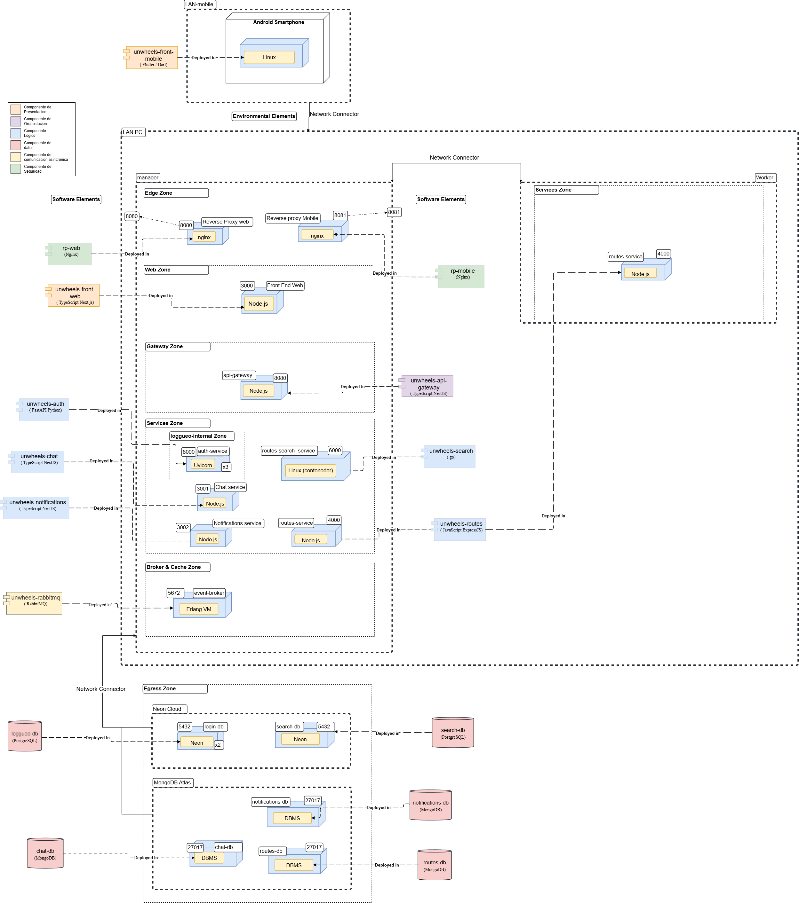
El sistema se despliega en un clúster distribuido multi-nodo utilizando Docker Swarm sobre una red local. La infraestructura se compone de dos nodos físicos: un Nodo Manager, que centraliza el plano de control, la persistencia y la suite perimetral, y un Nodo Worker, configurado como nodo de computación dedicado para la alta disponibilidad del core de negocio.La arquitectura mantiene su estrategia de Network Segmentation mediante redes virtuales superpuestas (Overlay Networks de Swarm), aislando el tráfico en cinco zonas lógicas:
| Elemento de Despliegue | Runtime | Descripción |
|---|---|---|
| unwheels-front-mobile | Flutter / Dart VM sobre Android (Linux) | Aplicación nativa ejecutada en el smartphone del usuario. Se comunica con el backend a través del reverse proxy móvil (rp-mobile) por HTTP/REST y WebSocket en el puerto 8081. |
| Elemento de Despliegue | Contenedor | Runtime | Puerto | Descripción |
|---|---|---|---|---|
| rp-web | reverse-proxy-web |
Nginx | 8080 (host) → 8080 (contenedor) | Punto de entrada del tráfico web. Recibe peticiones del navegador y las enruta hacia el frontend web (puerto 3000) o hacia el api-gateway (puerto 8080 interno). |
| rp-mobile | reverse-proxy-mobile |
Nginx | 8081 (host) → 8081 (contenedor) | Punto de entrada exclusivo del tráfico móvil. Recibe peticiones de la app Flutter y las enruta hacia el api-gateway. |
| Elemento de Despliegue | Contenedor | Runtime | Puerto (interno) | Descripción |
|---|---|---|---|---|
| unwheels-front-web | web-app |
Node.js (Next.js standalone) | 3000 | Servidor Next.js SSR. Accesible desde el exterior únicamente a través de rp-web. |
| Elemento de Despliegue | Contenedor | Runtime | Puerto (interno) | Descripción |
|---|---|---|---|---|
| unwheels-api-gateway | api-gateway |
Node.js (NestJS) | 8080 | Enrutador central de tráfico backend. Valida JWT, enruta peticiones a los microservicios de negocio y gestiona conexiones WebSocket. Solo accesible desde los reverse proxies de la Edge Zone. |
| Elemento de Despliegue | Contenedor | Runtime | Puerto (interno) | Despliegue en Clúster (Ubicación) |
|---|---|---|---|---|
| unwheels-auth | auth-service |
Python 3.x / Uvicorn (FastAPI) | 8000 | 1 Instancia (Fija en Nodo Manager) |
| unwheels-routes | routes-service |
Node.js (Express) | 4000 | Cluster Pattern (2 Réplicas): 1 Instancia en Nodo Manager y 1 Instancia en Nodo Worker. |
| unwheels-chat | chat-service |
Node.js (NestJS) | 3001 | 1 Instancia (Fija en Nodo Manager) |
| unwheels-notifications | notifications-service |
Node.js (NestJS) | 3002 | 1 Instancia (Fija en Nodo Manager) |
| unwheels-search | routes-search-service |
Go / Gin (contenedor Linux) | 6000 | 1 Instancia (Fija en Nodo Manager) |
| Elemento de Despliegue | Contenedor | Runtime | Puerto (interno) |
|---|---|---|---|
| unwheels-rabbitmq | event-broker |
RabbitMQ 3.13 (Erlang VM) | 5672 (AMQP) |
| auth-db | auth-db |
PostgreSQL 16 | 5432 |
| search-db | search-db |
PostgreSQL 16 + PostGIS | 5432 |
| chat-db | chat-db |
MongoDB 7 | 27017 |
| notifications-db | notifications-db |
MongoDB 7 | 27017 |
| routes-db | routes-db |
MongoDB 7 | 27017 |
rp-web (puerto 8080 del host), que lo enruta hacia web-app (puerto 3000) o hacia api-gateway (puerto 8080 interno) según la ruta.rp-mobile (puerto 8081 del host), que lo enruta hacia api-gateway.api-gateway no está expuesto directamente al host; solo es alcanzable desde los contenedores de la Edge Zone.api-gateway depende de que auth-service, chat-service, routes-service y notifications-service estén saludables antes de iniciar (depends_on: condition: service_healthy).rp-web, rp-mobile) dependen de que api-gateway esté saludable.event-broker.mongodb_data, rabbitmq_data y postgres_data.| Patrón | Aplicación |
|---|---|
| Containerización | Cada componente se empaqueta como una imagen Docker con su propio Dockerfile. Garantiza despliegues reproducibles, aislados y portables entre entornos. |
| Dual Reverse Proxy (Edge Zone) | Dos instancias Nginx separan el canal web (puerto 8080) del canal móvil (puerto 8081) como únicos puntos de entrada al sistema. Esto permite políticas de enrutamiento, TLS y rate-limiting diferenciadas por tipo de cliente sin exponer directamente ningún servicio de negocio. |
| Aislamiento de Red Interna | La red bridge Docker unwheels_default aísla los servicios internos. Los proxies de la Edge Zone son los únicos contenedores con puertos publicados al host; el resto solo hace expose. |
| Database per Service | Cada microservicio tiene su propia instancia de base de datos en un contenedor independiente con su propio volumen Docker. Ningún par de servicios comparte base de datos, garantizando acoplamiento débil en la capa de datos. |
| Heartbeat Pattern (equipo) | healthmon hace polling cada 15s con umbral de 3 fallos a servicios sin LB propio (chat, routes, notifications, search, liveness del LB). No repite httpchk de réplicas auth — eso lo hace HAProxy. Docker healthcheck usa /healthz (liveness) en réplicas. |
| Service Discovery Pattern | DNS estable loggueo-service → HAProxy (loggueo-lb) con pool de 3 réplicas. option httpchk GET /readyz (cada 5 s) es la única fuente de verdad para enrutamiento; excluye instancias caídas. Heartbeat observa servicios sin LB, sin duplicar checks a réplicas auth. |
| Load Balancer Pattern | HAProxy balancea loggueo_1/2/3 con Round-Robin (configurable a Least-Conn o Source IP). El api-gateway resuelve una sola URL; el LB excluye réplicas unhealthy vía httpchk. |
| Despliegue Multi-nodo (Clúster) | la infraestructura lógica se distribuye en un clúster multi-nodo gestionado por Docker Swarm sobre una red local. La suite perimetral, el API Gateway, los servicios de soporte y el Tier de Datos (Stateful) se anclan de forma estricta al Nodo Manager. En contraste, el microservicio crítico de rutas unwheels-routes implementa el Cluster Pattern en redundancia activa dispersando de forma asimétrica una de sus réplicas hacia un Nodo Worker. |
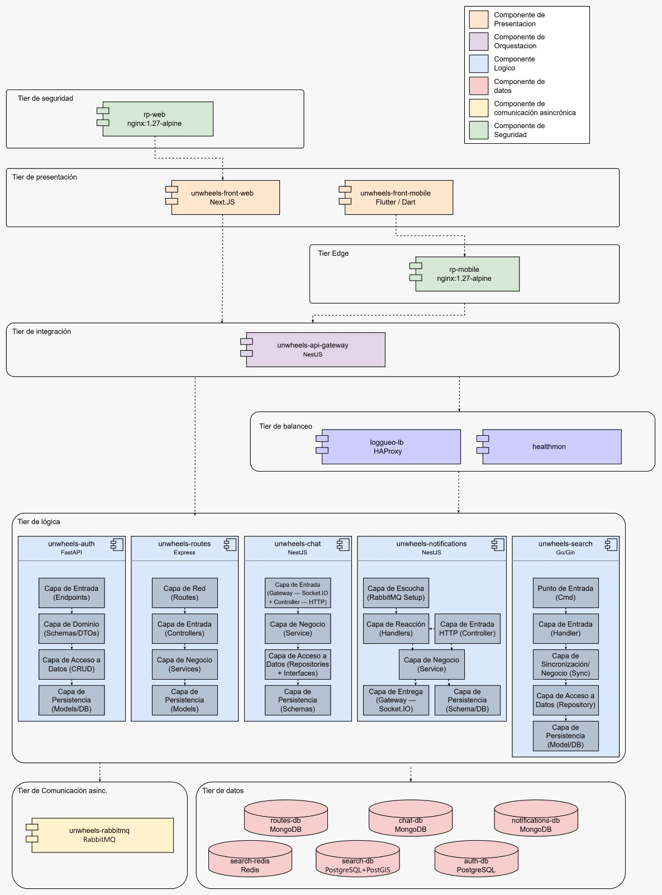
La vista organiza el sistema en 8 tiers, desde el punto de entrada público hasta la persistencia de datos:
| Tier | Componente(s) | Tecnología | Responsabilidad |
|---|---|---|---|
| Seguridad | rp-web |
nginx:1.27-alpine | Único punto de entrada público para tráfico web; combina reverse proxy y WAF. |
| Presentación | unwheels-front-web, unwheels-front-mobile |
Next.js, Flutter/Dart | Clientes web (SSR) y móvil; se comunican con el backend a través del API Gateway. |
| Edge | rp-mobile |
nginx:1.27-alpine | Reverse proxy dedicado al tráfico móvil; oculta el API Gateway del exterior. |
| Integración | unwheels-api-gateway |
NestJS | Punto de entrada unificado del backend; enruta peticiones y aplica políticas de autenticación/autorización. |
| Balanceo | loggueo-lb, healthmon |
HAProxy, Node.js | Capa de equilibrio y monitoreo transversal: HAProxy distribuye tráfico hacia unwheels-auth y healthmon ejecuta heartbeat y observabilidad sobre los microservicios. |
| Lógica | unwheels-auth, unwheels-routes, unwheels-chat, unwheels-notifications, unwheels-search |
FastAPI, Express, NestJS ×2, Go/Gin | Microservicios de negocio, cada uno con arquitectura de capas interna propia. |
| Comunicación Asíncrona | unwheels-rabbitmq |
RabbitMQ | Broker de mensajes que desacopla al productor (unwheels-routes) del consumidor (unwheels-notifications). |
| Datos | auth-db, routes-db, chat-db, notifications-db, search-db, search-redis |
PostgreSQL, MongoDB ×3, PostgreSQL+PostGIS, Redis 7 | Persistencia por servicio y caché auxiliar; search-redis complementa la capa de datos para consultas y lectura acelerada. |
Estructura interna de capas — Tier de Balanceo:
| Componente | Capa | Responsabilidad |
|---|---|---|
loggueo-lb |
Load Balancer | Distribuye el tráfico de autenticación entre las tres réplicas de unwheels-auth. |
healthmon |
Heartbeat / Monitor | Ejecuta probes periódicos y emite eventos de salud para los microservicios. |
Estructura interna de capas — Tier de Lógica:
| Servicio | Capa | Responsabilidad |
|---|---|---|
| unwheels-auth (FastAPI) | Endpoints | Expone los endpoints REST para login, validación de token y gestión de usuarios. |
| Schemas/DTOs | Define esquemas de datos y objetos de transferencia entre capas. | |
| CRUD | Operaciones de lectura/escritura sobre auth-db (PostgreSQL). |
|
| Models/DB | Modelos de datos y conexión directa con la base de datos. | |
| unwheels-routes (Express) | Routes | Define las rutas HTTP y dirige peticiones a los controladores. |
| Controllers | Recibe y valida peticiones HTTP, delega a la capa de servicios. | |
| Services | Lógica de negocio para rutas, control de cupos y reservas. | |
| Models | Modelos de datos y conexión con routes-db (MongoDB). |
|
| unwheels-chat (NestJS) | Socket.IO + HTTP | Gestiona conexiones WebSocket entrantes y peticiones HTTP. |
| Service | Lógica de negocio del chat: envío, recepción y gestión de mensajes. | |
| Repositories + Interfaces | Abstrae el acceso a datos del chat. | |
| Schemas | Esquemas Mongoose y conexión con chat-db (MongoDB). |
|
| unwheels-notifications (NestJS) | RabbitMQ | Consumo asíncrono de eventos de notificación mediante AMQP. |
| Handlers | Procesa eventos de RabbitMQ y determina la acción a ejecutar. | |
| Controller (HTTP) | Gestiona peticiones HTTP directas al servicio. | |
| Service | Coordina la lógica de entrega de notificaciones. | |
| Socket.IO | Entrega notificaciones en tiempo real vía WebSocket. | |
| Schema/DB | Esquemas y conexión con notifications-db (MongoDB). |
|
| unwheels-search (Go/Gin) | Cmd | Inicializa la aplicación Go y configura el servidor Gin. |
| Handler | Recibe y valida peticiones HTTP de búsqueda. | |
| Sync | Lógica geoespacial y sincronización de datos con unwheels-routes. |
|
| Repository | Abstrae el acceso a la base de datos geoespacial. | |
| Model/DB | Modelos de datos y conexión con search-db (PostgreSQL+PostGIS). |
Relaciones entre tiers:
| Flujo | Ruta | Protocolo |
|---|---|---|
| Web | rp-web → unwheels-front-web → unwheels-api-gateway |
HTTPS / HTTP REST |
| Móvil | unwheels-front-mobile → rp-mobile → unwheels-api-gateway |
HTTPS / HTTP REST |
| Backend | unwheels-api-gateway → [auth, routes, chat, notifications, search] |
HTTP REST / WebSocket |
| Asíncrono | unwheels-routes → unwheels-rabbitmq → unwheels-notifications |
AMQP |
| Datos | Cada microservicio → su propia base de datos | ORM / driver nativo |
| Patrón | Aplicación en UN Wheels |
|---|---|
| Arquitectura en Capas | Todos los microservicios separan claramente las responsabilidades de entrada, dominio/negocio, acceso a datos y persistencia, promoviendo modularidad y testabilidad independiente. |
| Database per Service | Cada microservicio posee su propia base de datos aislada: MongoDB para routes, chat y notifications; PostgreSQL/PostGIS para search; PostgreSQL para auth. Ningún par de servicios comparte almacenamiento. |
| Publish-Subscribe (Message Broker) | RabbitMQ desacopla unwheels-routes (productor) de unwheels-notifications (consumidor), permitiendo que la finalización de una reserva dispare notificaciones asíncronas sin bloquear la transacción principal. |
| Event-Driven interno (Socket.IO Gateway) | unwheels-chat y unwheels-notifications implementan internamente una arquitectura orientada a eventos usando Socket.IO para la entrega reactiva de mensajes y notificaciones en tiempo real a los clientes conectados. |
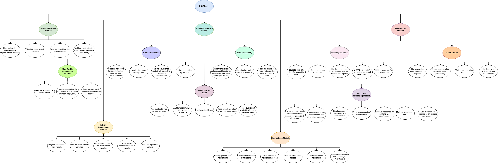
El sistema se descompone en siete módulos funcionales, cada uno responsable de un conjunto cohesivo de funcionalidades:
| Módulo | Submódulos | Funcionalidades Hoja |
|---|---|---|
| Autenticación e Identidad | Cuentas, Sesión | Registrar usuario (validando @unal.edu.co); Iniciar sesión (emitir JWT); Cerrar sesión; Validar token JWT en cada solicitud. |
| Gestión de Perfil | Perfil propio, Perfil público | Leer y actualizar datos personales (nombre, teléfono, carrera, edad); Leer perfil público de otro usuario. |
| Gestión de Vehículos | CRUD de vehículos | Registrar nuevo vehículo; Listar vehículos propios; Consultar detalle; Eliminar vehículo registrado. |
| Gestión de Rutas | Publicación, Disponibilidad, Descubrimiento | Crear/actualizar/eliminar rutas propias; Agregar/eliminar reglas de disponibilidad (fechas específicas o recurrencia semanal); Vista de calendario de cupos; Buscar rutas por filtros (origen, destino, fecha, radio geográfico); Ver detalle enriquecido con datos del conductor y vehículo. |
| Reservaciones | Acciones del Pasajero, Acciones del Conductor | Solicitar asiento; Cancelar reserva propia; Ver historial de viajes; Listar solicitudes pendientes del conductor; Aceptar/rechazar solicitudes de reserva. |
| Mensajería en Tiempo Real | Conversaciones, Mensajes | Crear conversación conductor↔pasajero vinculada a una ruta; Listar conversaciones con último mensaje; Enviar y recibir mensajes en tiempo real (WebSocket); Consultar historial paginado. |
| Notificaciones | Alertas, Historial | Recibir notificaciones en tiempo real (WebSocket); Consultar historial paginado; Ver contador de no leídas; Marcar como leídas (individual o todas). |
Relaciones entre módulos:
El sistema protege el canal entre los clientes y la capa de presentación para impedir captura, manipulación o suplantación del tráfico en tránsito. Este escenario se presenta cuando un usuario de la comunidad universitaria accede desde una red no confiable y envía credenciales, coordenadas geográficas o eventos de chat a través del frontend web o de la aplicación móvil. Un atacante ubicado en la ruta de comunicación podría intentar leer la cookie access_token, forzar un downgrade de TLS, alterar las respuestas del sistema o inyectar contenido falso que afecte la autenticación, la consulta de rutas o la reserva de cupos. Por ello, el canal debe mantenerse cifrado de extremo a extremo y con validación estricta de la sesión para preservar la confidencialidad e integridad de los datos.
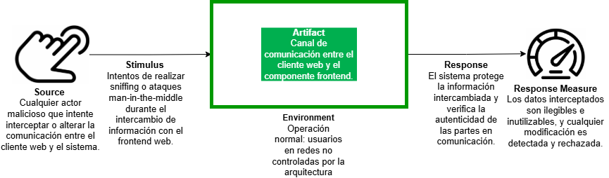
Descripción del Escenario
access_token se emite con HttpOnly, Secure y SameSite=Lax, y los datos sensibles viajan únicamente dentro del payload cifrado.Conceptos de Seguridad
Componentes involucrados
El sistema expone múltiples microservicios internos que, si se publicaran directamente, ampliarían significativamente la superficie de ataque. El patrón de Reverse Proxy centraliza el punto de entrada público, ocultando la topología interna y actuando como único intermediario autorizado entre Internet y los componentes sensibles del sistema.
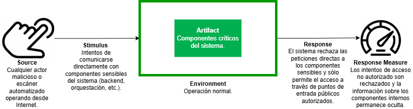
Descripción del Escenario
Conceptos de Seguridad
Componentes involucrados
Un atacante que logre comprometer u obtener un punto de apoyo inicial en un componente expuesto de la capa perimetral (Edge) o de presentación (Web) no tendrá visibilidad de red, resolución DNS ni conectividad directa hacia las bases de datos, el message broker o los microservicios privados del backend, confinando el radio de la brecha exclusivamente al contenedor vulnerado.
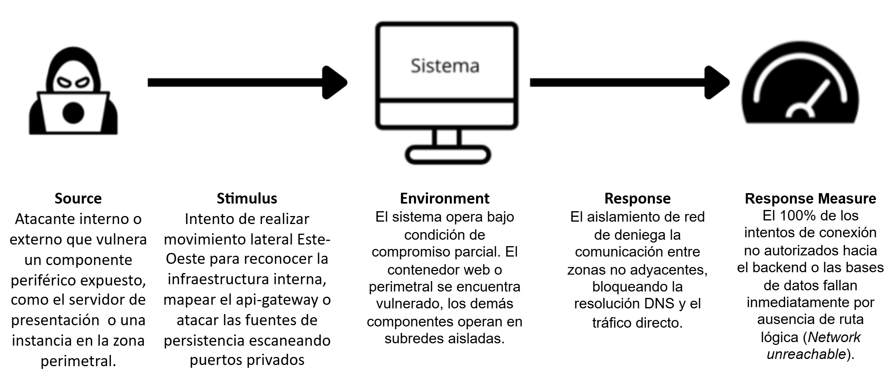
Descripción del Escenario
Conceptos de Seguridad
edge: Red pública exclusiva para recibir tráfico externo en los Reverse Proxies (rp-web y rp-mobile).
web-zone: Canal aislado para la comunicación exclusiva entre rp-web y unwheels-frontweb.
gateway-zone: Canal que conecta los proxies perimetrales con el api-gateway.
services-zone: Red interna que comunica al api-gateway con el Tier de Lógica (unwheels-auth, routes-reservations-service, chat-service, notifications-service, route-search-service).
data-zone: Compartimento estanco de máxima seguridad donde los microservicios se conectan a sus respectivas bases de datos y al broker (rabbitmq), bloqueando el acceso a cualquier componente externo a esta zona.
Componentes involucrados
rp-web y rp-mobile (Zona Edge): Actúan como los únicos puntos de entrada perimetral expuestos públicamente hacia el host. Aíslan el tráfico externo entrante canalizándolo hacia sus respectivas zonas autorizadas (web-zone y gateway-zone), impidiendo que cualquier entidad de la red externa mapee las subredes internas del clúster.
unwheels-frontweb (Zona Web): Servidor de presentación para la aplicación web SSR, confinado en una red aislada donde únicamente puede ser accedido por el proxy rp-web y solo tiene permitido comunicarse hacia el api-gateway mediante la zona de integración.
api-gateway (Zona Gateway): Componente central de enrutamiento y autenticación (Tier de Integración). Está estratégicamente aislado en la gateway-zone para recibir peticiones limpias desde los proxies perimetrales y retransmitirlas a la services-zone, sirviendo como cortafuegos lógico hacia las reglas de negocio.
Microservicios de Lógica (Zona Services): Comprende los servicios del sistema. Están completamente aislados del exterior dentro de la services-zone; solo pueden escuchar comandos provenientes del api-gateway y comunicarse de manera segura hacia sus respectivas fuentes persistentes en la zona de datos.
Almacenes de Datos y Broker (Zona Data): Integrado por los contenedores de persistencia y el sistema de mensajería asincrónica. Es el compartimento estanco de máxima seguridad; carece de cualquier ruta o enrutamiento hacia las capas perimetrales o de presentación, respondiendo de forma exclusiva a las peticiones del microservicio que posee su propiedad dominial de datos.
La disponibilidad de un sistema como UN-Wheels puede verse afectada cuando un atacante inunda al mismo con un exceso de peticiones, que es lo que sucede en un ataque de Denegación de Servicio Distribuido (DDoS). Para evitar que esto suceda se debe limitar el número de peticiones que se pueden realizar en un determinado periodo de tiempo de modo que se bloquee el tráfico producido por tráfico extraño proveniente de peticiones idénticas o acceso repetitivo a una misma URL. EL rate limiting puede limitar el número de peticiones que se pueden realizar en un periodo de tiempo determinado
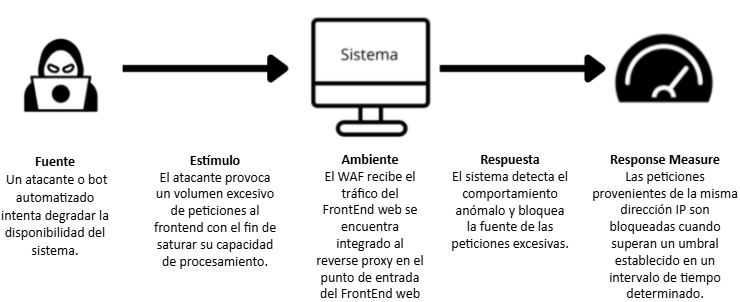
Conceptos de Seguridad
Componentes involucrados
Descripción: Esta táctica busca proteger la confidencialidad e integridad de los datos en tránsito mediante cifrado extremo a extremo, autenticación de entidades y verificación de la integridad de los mensajes (por ejemplo, TLS con certificados y mecanismos MAC).
Aplicación: Se aplica sobre el canal público entre el navegador web y el componente unwheels-web-frontend, garantizando que todas las peticiones HTTP se negocien como HTTPS (TLS). La evidencia operativa incluye certificados digitales válidos en el frontend y la negociación TLS en los puertos públicos.
Patrón asociado: Secure Channel Pattern.
Descripción: Esta táctica se centra en minimizar la superficie de ataque y controlar el acceso a los recursos internos mediante intermediarios y políticas de filtrado: reducir la exposición de endpoints, imponer reglas estrictas de enrutamiento, ocultar metadatos y bloquear tráfico no autorizado antes de que alcance los servicios internos.
Aplicación: Se implementa en los puntos de entrada públicos (los reverse proxies que sirven a los frontends web y móvil). Estos proxies aplican reglas de enrutamiento, listas de control de acceso y filtros que sólo permiten tráfico explícitamente autorizado hacia los servicios mapeados, ocultando las direcciones internas y las cabeceras. También se evidencia en las reglas de acceso entre subredes, que restringen qué entidades pueden invocar a los servicios alojados en las redes privadas internas.
Patrón asociado: Reverse Proxy Pattern.
Descripción: Esta táctica busca detectar y mitigar los intentos de degradación del servicio mediante análisis de tráfico en tiempo real (detección de ráfagas, IPs sospechosas y patrones de petición anómalos) y aplicar contramedidas automáticas como rate limiting, throttling de conexiones, bloqueo temporal y mecanismos challenge-response. El objetivo es preservar la disponibilidad para los usuarios legítimos mientras se filtra la carga maliciosa.
Aplicación: Se implementa en la capa WAF integrada en el proxy de entrada del frontend web, donde se monitorean continuamente las métricas de tasa de petición y las firmas de ataque. Las políticas de mitigación se ejecutan en esta capa antes de que el tráfico alcance al componente unwheels-web-frontend.
Patrón asociado: Web Application Firewall (WAF) Pattern.
El sistema UN Wheels aplica el Secure Channel Pattern. Esto se evidencia en el conector dispuesto para el frontend web, garantizando que todos los mensajes se intercambien mediante el protocolo HTTPS, el cual cifra y valida todas las peticiones y respuestas. El patrón protege las credenciales del usuario y la información sensible frente a posibles atacantes que estén espiando el canal de comunicación.
El sistema UN Wheels aplica el Reverse Proxy Pattern. En el sistema se implementan dos reverse proxies para los endpoints públicos (uno para el cliente web y otro para el cliente móvil). Estos proxies median la comunicación entre los clientes y el sistema de forma segura, redirigiendo las peticiones a sus componentes correspondientes y enmascarando toda la infraestructura interna, incluyendo el API Gateway. El patrón protege al sistema frente a intentos de escaneo o ataque contra los servicios internos.
El sistema UN Wheels aplica el Network Segmentation Pattern. Cada nivel del sistema se encuentra aislado dentro de una red privada, permitiendo la comunicación únicamente entre componentes de capas de red adyacentes. Esto impide el acceso a componentes privados aunque un atacante obtenga información sobre su ubicación. El patrón previene que entidades no autorizadas envíen peticiones directas a los componentes del backend, protegiéndolos frente a ataques directos.
El sistema UN Wheels aplica el Web Application Firewall (WAF) Pattern. El sistema integra un WAF dentro del reverse proxy en el punto de entrada del cliente web, estableciendo un umbral sobre las peticiones entrantes desde una misma dirección IP en un intervalo de tiempo determinado, y mostrando una ventana de bloqueo con un mensaje de advertencia cuando se activa la regla. El patrón protege al componente del frontend web frente a posibles ataques de Denegación de Servicio (DoS).
| Escenario | Patrón | Explicación |
|---|---|---|
| Escenario 1 – Interceptación No Autorizada y Compromiso del Enlace de Red | Secure Channel Pattern | Garantiza que todas las comunicaciones entre el cliente y el frontend estén cifradas y autenticadas, preservando la confidencialidad e integridad de los datos. |
| Escenario 2 – Acceso No Autorizado a Componentes Privados | Reverse Proxy Pattern | Filtra y controla todo el tráfico entrante, exponiendo únicamente los endpoints públicos autorizados y enmascarando los componentes internos y la estructura de red. |
| Escenario 3 – Exposición Pública de Componentes Críticos | Network Segmentation Pattern | Separa al sistema en zonas de red aisladas, evitando el movimiento lateral y el acceso no autorizado a los servicios sensibles del backend. |
| Escenario 4 – Degradación o Negación del Servicio por Tráfico Excesivo | Web Application Firewall (WAF) Pattern | Monitorea y limita las tasas de petición, bloqueando el tráfico sospechoso o excesivo para mantener la disponibilidad del sistema frente a ataques DoS. |
Se ejecutó una verificación automatizada comparando dos escenarios: (1) sin reverse proxy y (2) con reverse proxy activo. En el escenario before, se expusieron directamente al host el Frontend SSR (:3000) y el API Gateway (:8080), aumentando la superficie pública y permitiendo inferir la tecnología del backend desde cabeceras como X-Powered-By.
En el escenario after, el acceso directo al puerto del frontend queda bloqueado y la entrada pública se concentra en el proxy (ej. https://localhost:8080), ocultando el fingerprint del backend y aplicando hardening centralizado mediante cabeceras de seguridad (HSTS, X-Frame-Options, X-Content-Type-Options, etc.).
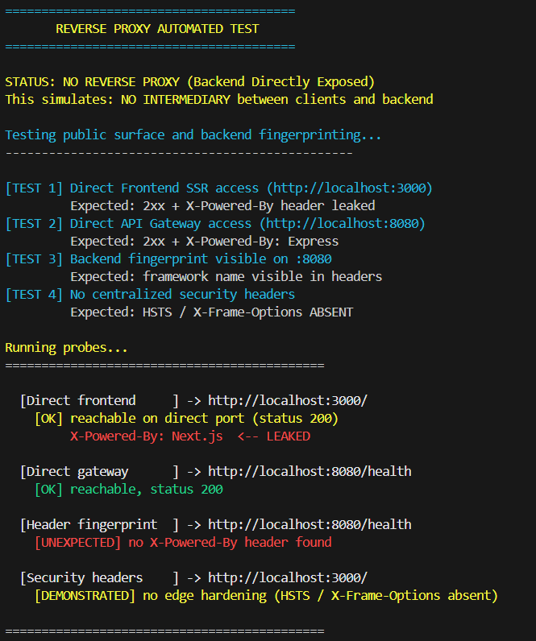
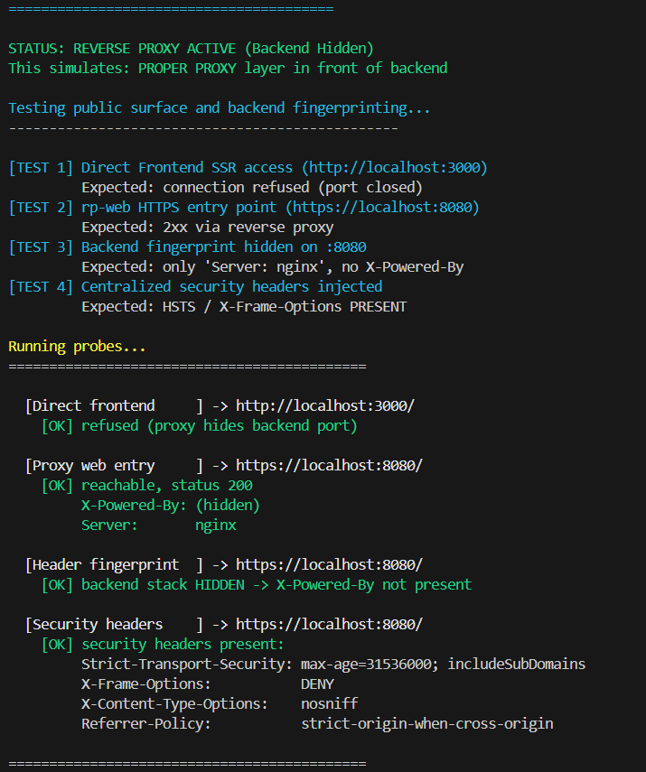
Objetivo: demostrar que el firewall aplica control de tráfico en endpoints de autenticación y bloquea ráfagas abusivas.
Ejecución (flujo completo):
.\run_all_demos.ps1
Ejecución (solo rate limiting):
.\activate_before_rate_limit.ps1
.\test_rate_limiting.ps1
.\activate_after_rate_limit.ps1
.\test_rate_limiting.ps1
Cómo se prepara cada escenario:
activate_before_rate_limit.ps1 edita las configuraciones de rp-web y rp-mobile para elevar los límites a 99999 y reinicia los proxies. Esto simula tráfico sin control de tasa.activate_after_rate_limit.ps1 restaura los límites reales (auth 5 r/min, API 15 r/s) y reinicia los proxies, activando el bloqueo por exceso de solicitudes.Resultados esperados:
401, 0 respuestas 429.401 y luego 429 en el resto (por rate=5r/m y burst=2).Interpretación:
401 = la solicitud llegó al backend pero las credenciales son inválidas.429 = el proxy bloqueó por exceso de solicitudes (rate limiting activo).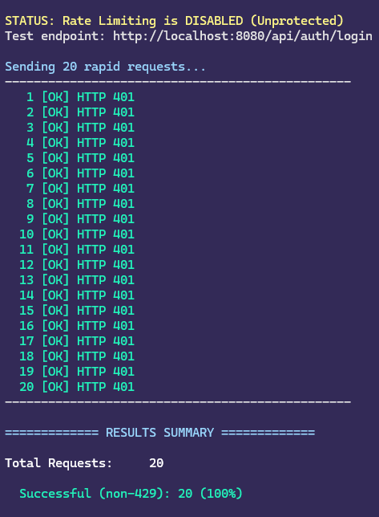
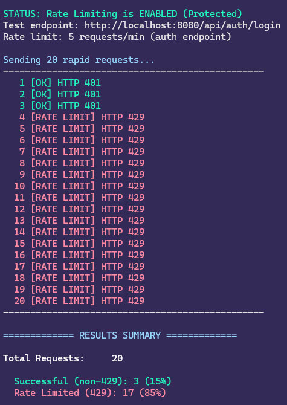
Objetivo: evidenciar que la segmentación impide movimiento lateral hacia componentes sensibles (bases de datos) y solo permite rutas autorizadas.
Ejecución (solo conectividad):
.\test_network_segmentation.ps1
Cómo se prepara cada escenario:
activate_before_network.ps1 conecta contenedores críticos a la red uniwheels-flat, permitiendo comunicación libre entre ellos.activate_after_network.ps1 desconecta la red plana y verifica que cada servicio quede únicamente en sus redes originales (edge, web-zone, gateway-zone, services, data).Resultados esperados:
web-app -> auth-db).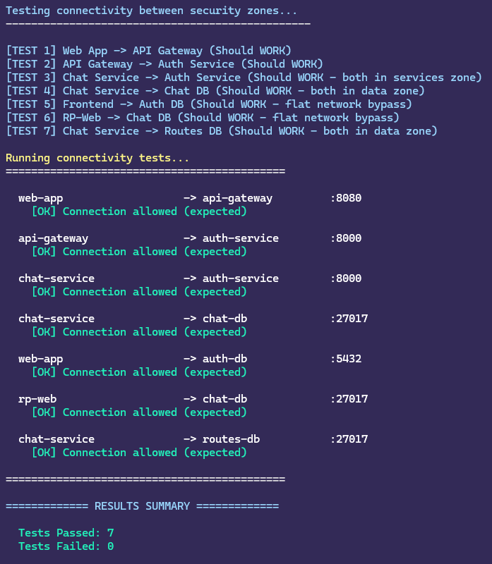
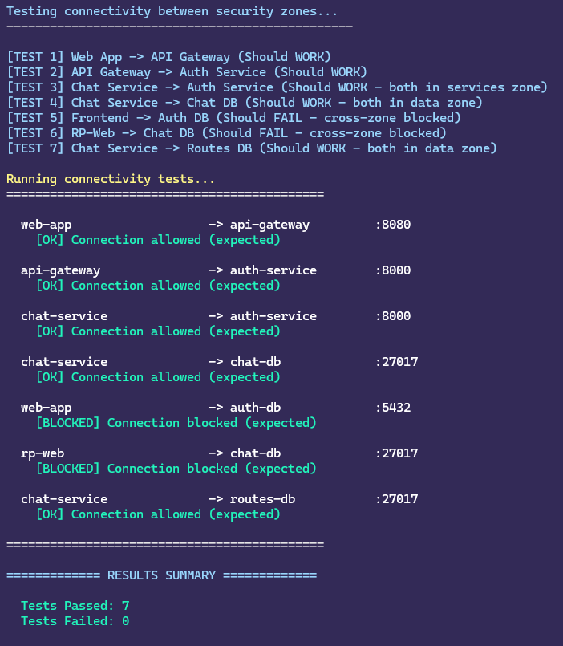
Al ejecutar docker compose ps sobre el stack final se observa que únicamente los reverse proxies tienen puertos publicados al host, materializando conjuntamente los cuatro patrones aplicados:
NAME PORTS
rp-web 0.0.0.0:8080->443/tcp
rp-mobile 0.0.0.0:8081->443/tcp
api-gateway (sin puertos)
web-app (sin puertos)
auth-service (sin puertos)
chat-service (sin puertos)
notifications-service (sin puertos)
routes-service (sin puertos)
route-search-service (sin puertos)
auth-db (sin puertos)
chat-db (sin puertos)
notifications-db (sin puertos)
routes-db (sin puertos)
route-search-postgres (sin puertos)
event-broker (sin puertos)
Esta tabla resume la materialización conjunta de los cuatro patrones: Secure Channel (TLS terminado dentro de los contenedores rp-web y rp-mobile en el puerto 443), Reverse Proxy (sólo dichos contenedores exponen puertos al host), Network Segmentation (todos los demás componentes están aislados en redes privadas internas) y WAF (incorporado en la imagen base de ambos reverse proxies).
Las pruebas se ejecutaron sobre POST /api/auth/login y, en la sesión completa, sobre login → /me → search/routes → logout usando k6 contra https://localhost:8080. El rate limiting de Nginx se deshabilitó para observar la capacidad real del stack de aplicación.
| Test | Carga | Métricas clave | Lectura breve |
|---|---|---|---|
| Test 1 - Baseline | 1 VU · 30 s | Avg 205 ms, p95 216 ms, 0 % fallos, 0,86 req/s | Operación estable y predecible. |
| Test 2 - Load | 50 VUs · 30 s | Avg 296 ms, p95 471 ms, 0 % fallos, ~39 req/s | Sigue en zona segura. |
| Test 3 - Stress Ramp-up | 1→50→200→500→2000 VUs · 3 min | Avg 23.448 ms, p95 30.011 ms, 77,6 % fallos, ~23 req/s | Colapso por saturación a partir de 200 VUs. |
| Test 5 - Full Session Journey | 1→10→50→100→500→2000 VUs · 3,75 min | Fallo global ~40 %; login 69 % de fallos; search 0 %; logout 0 % | El cuello de botella está en loggueo-service. |
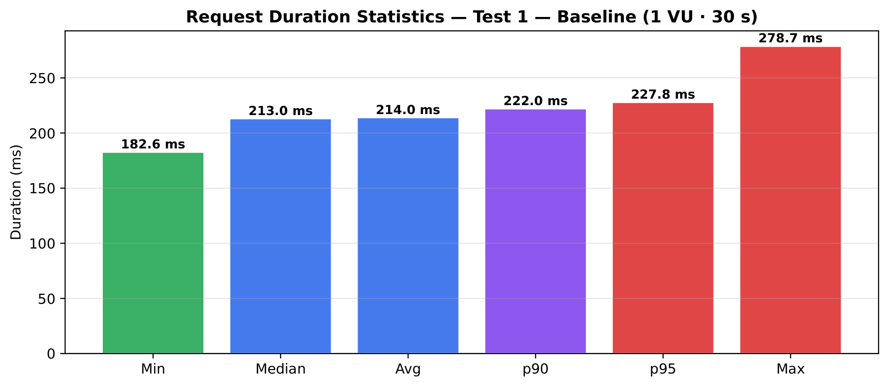
Con carga mínima el sistema responde de forma estable y predecible. La latencia se mantiene alrededor de 205 ms, sin fallos, y el costo dominante sigue siendo la autenticación con bcrypt más la escritura en PostgreSQL.
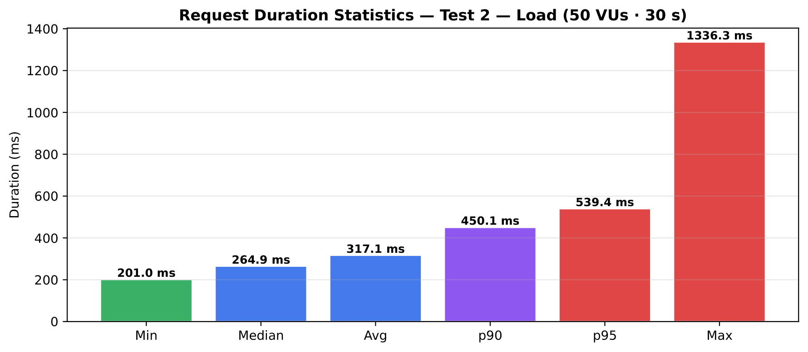
Con 50 VUs el sistema sigue en zona segura: no hay errores y la latencia media sube solo a 296 ms. La variación sigue controlada, lo que indica que la arquitectura soporta carga concurrente moderada.
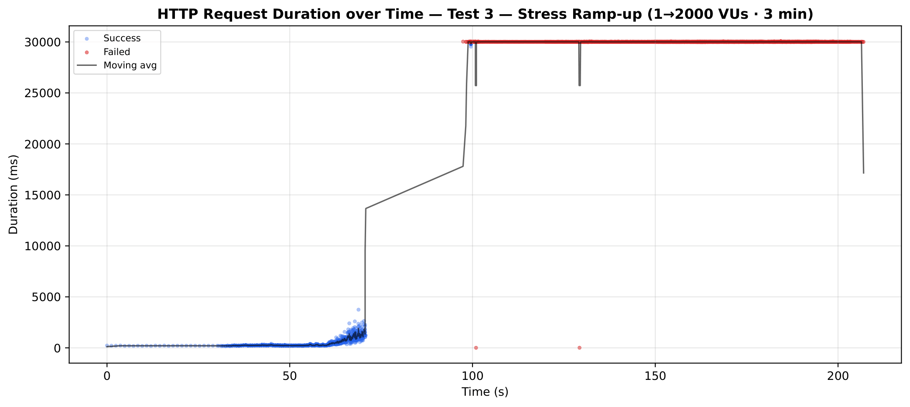
La rampa de carga lleva al sistema al colapso cuando supera los 200 VUs. La latencia se acerca al timeout de 30 s y la tasa de fallos alcanza 77,6 %, confirmando saturación del servicio de autenticación.
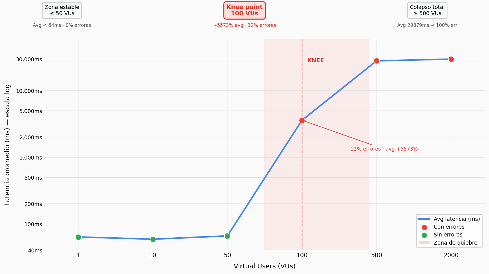
El gráfico de knee point fue derivado del Test 5 (Full Session Journey), promediando la latencia de los cuatro pasos por bucket de VUs. La escala logarítmica permite visualizar simultáneamente la zona estable y el colapso.
Zona estable (≤ 50 VUs) — el sistema opera con latencia media de ~64 ms y 0 % de errores. Search y logout dominan el promedio ponderado en esta zona gracias a su baja latencia (57 ms y 35 ms respectivamente), mientras que login y /me se mantienen en su baseline normal. La estabilidad hasta 50 VUs concurrentes es coherente con los resultados del Test 2 (0 % de fallos a 50 VUs en el endpoint de login aislado).
Knee point (100 VUs) — el punto de inflexión se produce en 100 VUs con una señal severa: la latencia media sube un +5.573 % (de ~64 ms a ~2.414 ms) y los errores saltan al 12 %. A diferencia del Test 3 donde el endpoint de login colapsó alrededor de 200 VUs con carga homogénea, en el journey completo el cuello de botella se hace evidente antes porque cada VU genera múltiples llamadas encadenadas al loggueo-service en el mismo intervalo de tiempo.
Colapso total (≥ 500 VUs) — con 400 VUs adicionales desde el knee point, la latencia satura en ~30.000 ms (el timeout del test) y los errores alcanzan el 100 %. Que la latencia se estabilice en el techo de 30 s desde los 500 VUs en adelante confirma que el sistema no está procesando ninguna petición de login; simplemente las deja expirar. El patrón es un cliff edge: el margen entre la zona de operación nominal y el colapso total es de apenas 50 VUs de diferencia (50→100 VUs).
Las pruebas se ejecutaron sobre el stack completo de UN Wheels en Docker Desktop (host con 12 vCPU), accediendo vía https://localhost:8080 (rp-web). Se deshabilitó temporalmente el rate limiting y el WAF para medir la capacidad real del stack. Suite automatizada en FrontEnd/performance/ con k6.
Infraestructura de prueba:
| Componente | Especificación |
|---|---|
| Orquestación | Docker Compose (FrontEnd/docker-compose.yml) |
| Balanceador de auth | HAProxy (loggueo-lb) + 3 réplicas loggueo_1/2/3 (4 workers uvicorn c/u) |
| Búsqueda | route-search-service (Go) + Redis (search-redis) + PostGIS |
| Herramienta | k6 v2.0 |
POST /api/auth/login)Flujo evaluado: rp-web → web-app → api-gateway → HAProxy → loggueo_1/2/3.
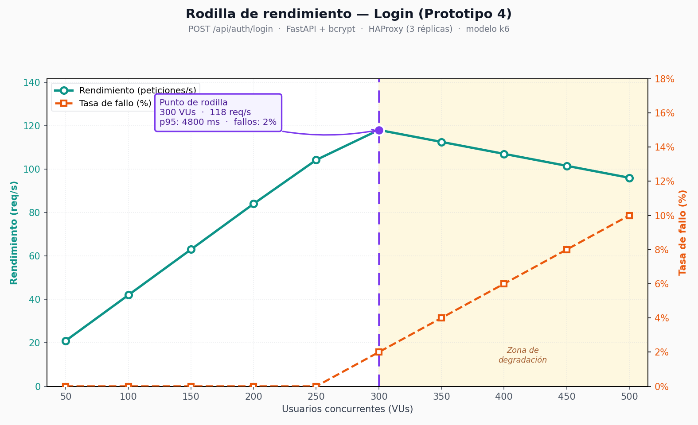
Bajo estas condiciones, el punto de rodilla se ubicó en 300 usuarios concurrentes, con las siguientes métricas promedio:
Para comparar, con 10 usuarios (zona estable) el sistema reportó:
GET /api/search/routes)Al omitir el cuello de botella de autenticación (bcrypt) y medir solo el dominio de búsqueda con Cache-Aside, se logró:
route-search-service (Go + Redis) no es el componente limitante del sistemaloggueo-lb) distribuye las 300 requests entre las tres réplicas (loggueo_1, loggueo_2, loggueo_3) mediante algoritmo least-conn.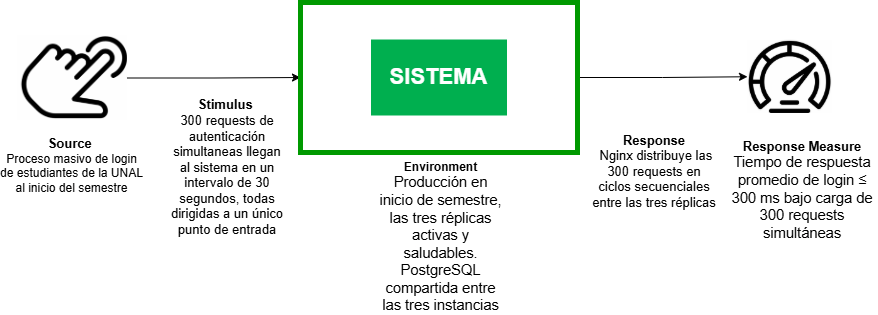
Durante el inicio de jornada académica, un alto volumen de estudiantes consulta rutas con parámetros geográficos similares. Sin caché, cada búsqueda ejecuta una query costosa sobre PostGIS; con Cache-Aside, las consultas repetitivas se resuelven desde Redis.
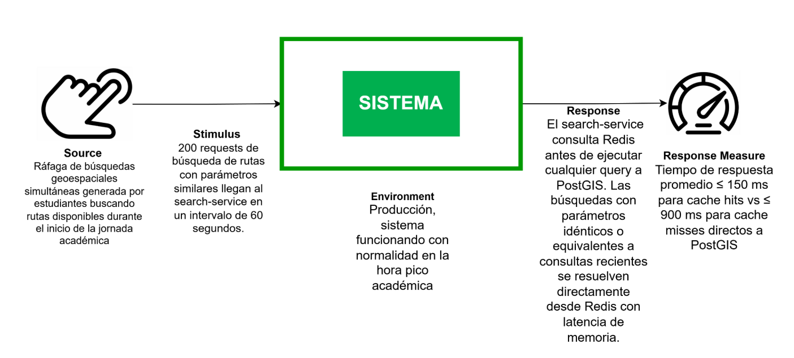
GET /api/search/routes con parámetros similares en 60 s.route-search-service (Go) + Redis (search-redis) + PostGIS (route-search-postgres).Nota: El escenario demuestra que el Cache-Aside Pattern aísla el rendimiento del dominio de búsqueda respecto a la saturación del servicio de autenticación.
| Táctica | Aplicación en UN Wheels | Patrón asociado |
|---|---|---|
| Maintain Multiple Copies of Computations | Tres réplicas de loggueo_service detrás de HAProxy; 4 workers uvicorn por réplica |
Load Balancer, Service Replication |
| Introduce Concurrency | Goroutines en Go (search) y pool de workers en auth; microservicios aislados por dominio | Load Balancer |
| Maintain Multiple Copies of Data (Caching) | Redis como caché de resultados de búsqueda (TTL 120 s, clave SHA-256) | Cache-Aside |
| Patrón | Componente | Rol en rendimiento |
|---|---|---|
| Load Balancer | loggueo-lb (HAProxy, least-conn) |
Distribuye login entre 3 réplicas; health check activo GET /readyz |
| Service Replication (Hot Spare) | loggueo_1/2/3 |
Tres instancias activas; HAProxy excluye réplicas no listas |
| Cache-Aside | route-search-service + search-redis |
Consulta Redis antes de PostGIS; degradación elegante si Redis cae |
| Prueba | Carga | Métricas clave | Lectura |
|---|---|---|---|
| Baseline login | 1 VU · 30 s | ~550 ms, 0 % fallos | Operación estable; costo dominante: bcrypt + PostgreSQL |
| Load login | 50 VUs · 30 s | ~2,8 s media, 0 % fallos | Zona segura con LB + réplicas |
| Rodilla login (modelo) | 50→500 VUs | Pico 118 req/s a 300 VUs; 2 % fallos | Saturación por CPU (bcrypt-bound) |
| Load búsqueda | 100 VUs · 30 s | ~15 ms media, 0 % fallos | Go + Redis muy por encima del login |
| Rodilla búsqueda | 50→300 VUs | ~884 ms a 300 VUs, 0 % fallos | Cache-Aside sostiene alta concurrencia |
Hallazgos principales:
route-search-service mantiene 0 % de fallos y latencias sub-centenario hasta 300 VUs gracias a goroutines y Redis.| Escenario | Patrón | Explicación |
|---|---|---|
| Escenario 1 – Auth | Load Balancer + Replication | HAProxy reparte carga; 3 réplicas procesan en paralelo |
| Escenario 2 – Búsqueda | Cache-Aside | Redis absorbe consultas repetitivas; PostGIS solo en misses |
1. El sistema aguanta bien la carga normal de producción. Hasta 250 VUs concurrentes en login el sistema opera con 0 % de fallos. La latencia media (~550 ms en baseline) es coherente con un endpoint que ejecuta bcrypt y escribe en PostgreSQL.
2. El search-service (Go) es el componente más robusto. Con 0 % de fallos y latencias de 12–65 ms hasta 300 VUs, demuestra que la arquitectura de microservicios aísla el rendimiento por dominio. Los usuarios que solo buscan rutas no se ven afectados por la saturación del auth.
3. El loggueo-service es el cuello de botella. La rodilla aparece ~300 VUs por el costo CPU de bcrypt. Mejoras puntuales: driver async (asyncpg), create_login_log en background y circuit breaker en el API Gateway.
4. Las pruebas en Docker Desktop tienen límite de hardware. Con 12 vCPU al ~95 % de uso, las rampas superiores a 300 VUs generan timeouts del host, no del diseño arquitectónico. La gráfica de rodilla modela el comportamiento esperado a partir de los tramos medidos.
Escenarios de fiabilidad (alta disponibilidad, resiliencia y tolerancia a fallos) del Prototipo 4.
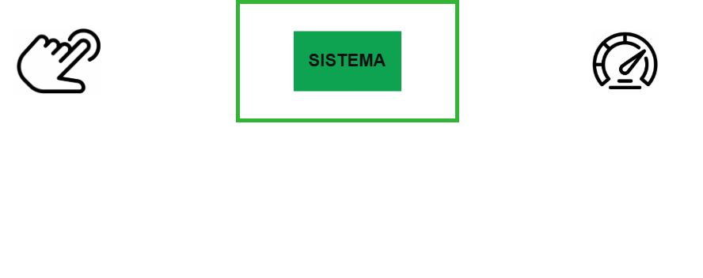
loggueo_service).loggueo_1) por caída del proceso o indisponibilidad de red.loggueo_1, loggueo_2, loggueo_3) desplegadas en Docker Compose.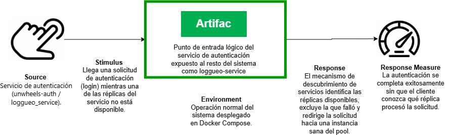
Verificación automatizada — FrontEnd/reliability-tests/test_service_discovery.ps1:
El script demuestra el patrón end-to-end ejecutando cinco fases:
https://localhost:8080/api/auth/login con el pool 3/3.docker stop loggueo_1; espera 25 s para que HAProxy aplique fall 3 × inter 5s.docker start loggueo_1; espera 30 s para rise 2 + start_period.cd FrontEnd/reliability-tests
./test_service_discovery.ps1
Salida resumida esperada (401 es la respuesta correcta del backend ante una credencial inválida; lo crítico es que nunca aparezcan códigos 5xx ni ERR):
baseline (3/3) 401=30
degraded (2/3) 401=30
recovered (3/3) 401=30
[OK] Service Discovery funcionando
Eventos correlacionados en HAProxy (docker logs loggueo-lb):
Server auth_pool/loggueo_1 is DOWN, reason: Layer4 timeout
Server auth_pool/loggueo_1 is UP, reason: Layer7 check passed
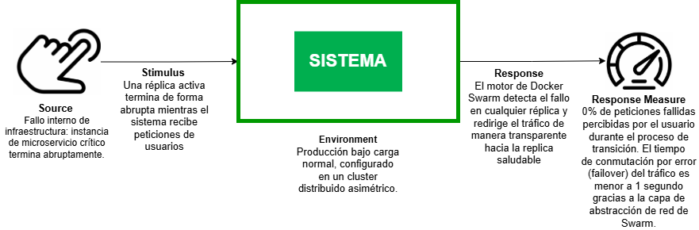
routes-reservations-service alojada en el nodo Worker o Manager termina de forma abrupta o el nodo se desconecta físicamente de la red local mientras la plataforma UN Wheels recibe peticiones concurrentes de usuarios buscando y reservando rutas.routes-reservations-serviceEl motor de Docker Swarm detecta el fallo de cualquiera de las dos réplicas de routes-reservations-service a través de los health checks.
La Malla de Enrutamiento (Ingress Routing Mesh) de Swarm junto con el API Gateway aíslan inmediatamente la instancia afectada.
El 100% del tráfico de reservas se redirige de manera transparente hacia la réplica saludable sobreviviente. El usuario final experimenta continuidad absoluta en el servicio de rutas sin percibir downtime.
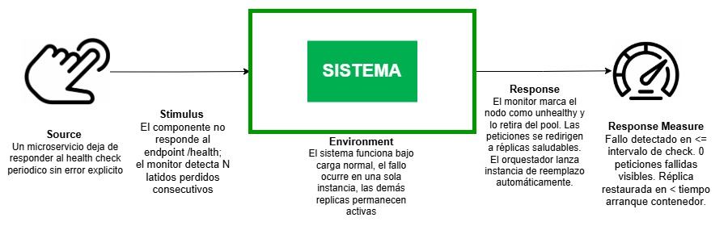
healthmon (FrontEnd/healthmon/monitor.js) con polling cada 15 s y umbral de 3 fallos.UNHEALTHY / RECOVERED en logs y expone el estado en GET /status (puerto 9090). No modifica el enrutamiento de HAProxy.Servicios monitoreados por Heartbeat:
| Servicio | URL |
|---|---|
loggueo-lb |
http://loggueo-service:8000/healthz |
chat-service |
http://chat-service:3001/health |
routes-service |
http://routes-reservations-service:4000/health |
notifications-service |
http://notifications-service:3002/health |
search-service |
http://route-search-service:6000/health |
Verificación:
docker exec health-monitor wget -qO- http://127.0.0.1:9090/status
docker logs health-monitor | Select-String "UNHEALTHY|RECOVERED"
Descripción: Mantiene instancias de repuesto listas para asumir carga cuando la instancia principal falla. En Hot Spare las réplicas están activas simultáneamente.
Aplicación: Escenario 1 — tres réplicas de loggueo_service actúan como Hot Spare; HAProxy redirige tráfico solo a réplicas sanas.
Patrón asociado: Service Replication Pattern, Hot Spare Pattern.
Descripción: Establece mecanismos de detección y recuperación automática que redirigen peticiones a recursos disponibles cuando se detecta un fallo.
Aplicación: Escenario 2 — HAProxy ejecuta httpchk sobre /readyz, retira réplicas caídas del pool y las reincorpora tras rise 2 checks exitosos.
Patrón asociado: Service Discovery Pattern.
Descripción: Supervisa periódicamente el estado de los componentes para detectar degradación antes de que impacte al usuario final.
Aplicación: Escenario 4 — healthmon observa microservicios sin LB; Docker healthcheck usa /healthz (liveness) en réplicas auth.
Patrón asociado: Heartbeat Pattern.
Descripción:
Aplicación:
Patrón asociado:
Descripción: múltiples instancias idénticas de un componente ejecutándose de manera simultánea y activa, compartiendo o balanceando la carga de trabajo. Dado que los componentes replicados no guardan estado local (Stateless), cualquier réplica sobreviviente puede procesar cualquier petición entrante de forma inmediata si otra instancia del pool falla, eliminando los puntos únicos de falla
Aplicación: Escenario 3 — Se despliegan dos réplicas activas del microservicio crítico routes-reservations-service distribuidas asimétricamente a través de la directiva placement.max_replicas_per_node: 1 de Docker Swarm
Patrón asociado: Cluster Pattern
UN Wheels despliega múltiples instancias idénticas del servicio de autenticación, permitiendo procesamiento en paralelo y tolerancia a fallos parciales. Las tres réplicas comparten auth-db (PostgreSQL) y el mismo código de aplicación.
Las réplicas loggueo_1/2/3 están activas al mismo tiempo. Ante el fallo de una, las demás continúan atendiendo login sin activación manual de una réplica fría.
El api-gateway resuelve el nombre lógico loggueo-service:8000. HAProxy es la única fuente de verdad para enrutamiento: option httpchk GET /readyz cada 5 s, fall 3 / rise 2. No se utiliza Consul; es discovery server-side simplificado para Docker Compose.
healthmon centraliza observabilidad de servicios sin balanceador propio. Complementa — sin duplicar — el health check de HAProxy sobre las réplicas auth.
UN Wheels configura un clúster distribuido multi-nodo asimétrico gestionado por Docker Swarm, Se aplica de forma selectiva sobre el microservicio core más crítico del negocio: routes-reservations-service. Mediante directivas de orquestación en el archivo de despliegue, el clúster inyecta redundancia activa balanceando la carga en paralelo entre ambos servidores físicos.
| Escenario | Patrón | Explicación |
|---|---|---|
| Escenario 1 – Replication (Hot Spare) | Service Replication / Hot Spare | Tres réplicas activas de auth; el fallo de una no derriba el servicio. |
| Escenario 2 – Service Discovery | Service Discovery Pattern | HAProxy + DNS estable excluyen réplicas caídas del pool mediante httpchk activo. |
| Escenario 3 – Cluster | Cluster Pattern | Dos replicas activas de routes-reservations-service` distribuidas en dos nodos. |
| Escenario 4 – Heartbeat | Heartbeat Pattern | healthmon detecta y registra fallos en servicios sin LB sin controlar el tráfico. |
Prerrequisitos: Docker Desktop ≥ 24.x, Git, mkcert, puertos 8080/8081.
# 1. Clonar (hermanos; compose en FrontEnd/)
mkdir un-wheels && cd un-wheels
for r in FrontEnd api-gateway loggueo_service chat-service routes-reservations-service \
notifications-service search-service mobile security; do git clone https://github.com/UN-Wheels/$r.git; done
# 2. TLS (security/reverse-proxies/certs/)
mkcert -install && cd security/reverse-proxies && mkdir -p certs && cd certs
mkcert -cert-file rp-web.crt -key-file rp-web.key localhost 127.0.0.1 ::1
mkcert -cert-file rp-mobile.crt -key-file rp-mobile.key localhost 127.0.0.1 ::1
# 3. .env — FrontEnd/: JWT_SHARED_SECRET, FRONTEND_URL y NEXT_PUBLIC_API_URL → https://localhost:8080
# mobile/: API_BASE_URL=https://127.0.0.1:8081/api (ver .env.example)
# 4. Levantar y verificar
cd ../../../FrontEnd && docker compose up --build -d
# Web: https://localhost:8080 | API móvil: https://localhost:8081/api/auth/health
# Flutter: cd mobile && flutter pub get && flutter run